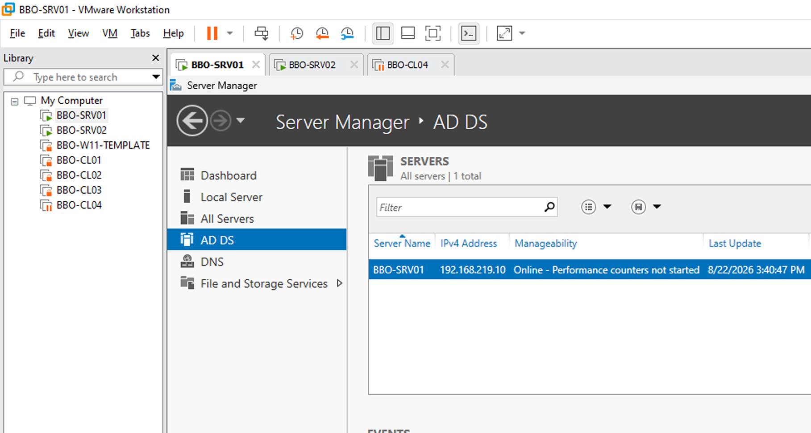
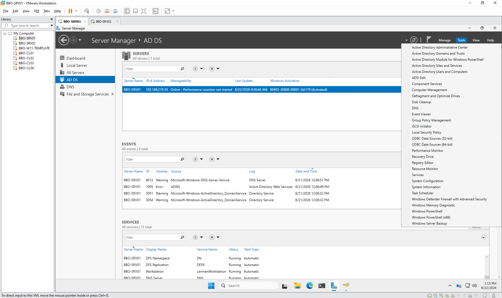
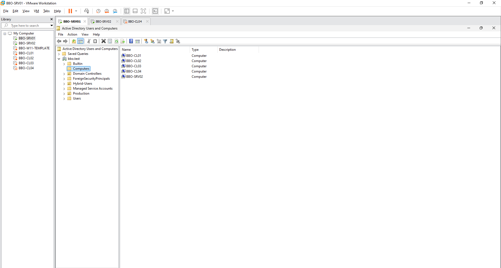
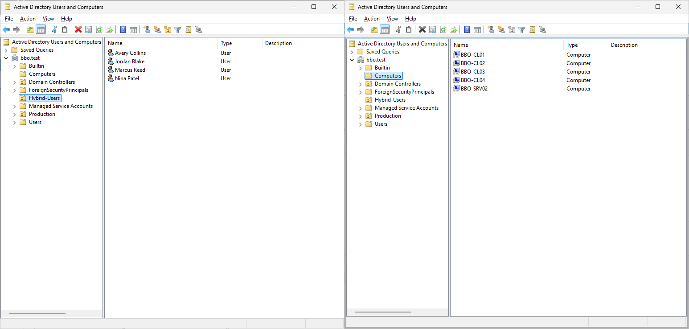
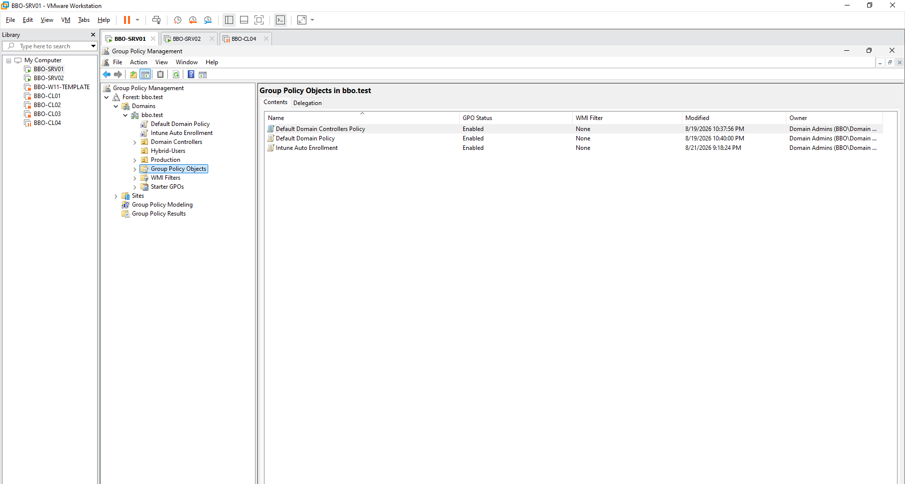
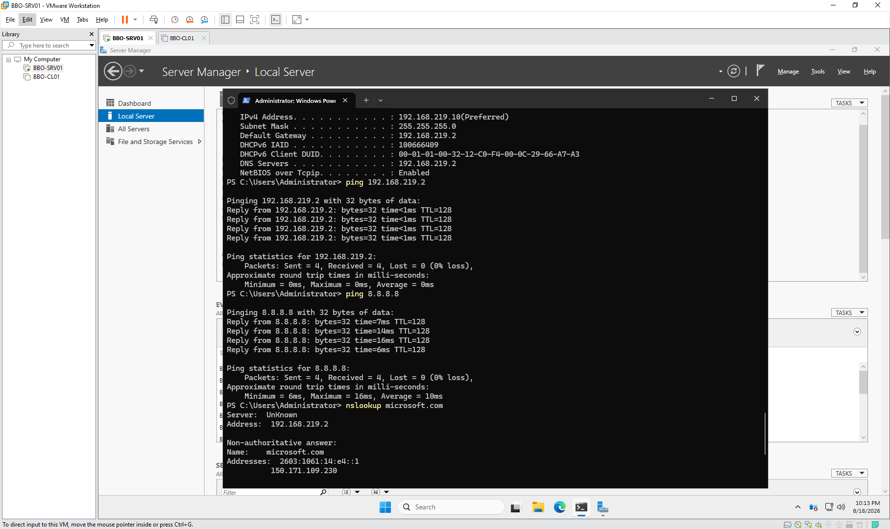

Virtualized FleetVMware environment running a Windows Server domain controller and multiple Windows 11 client systems.
VMWARE / WINDOWS INFRASTRUCTURE LAB
A self-directed virtualized lab spanning Windows Server 2025, AD DS, DNS, multiple Windows 11 clients, domain administration, Group Policy, file services, and PowerShell.
WINDOWS INFRASTRUCTURE
Windows Server, Active Directory, Group Policy, PowerShell, and a multi-client Windows 11 environment built to practice real administrative workflows.





